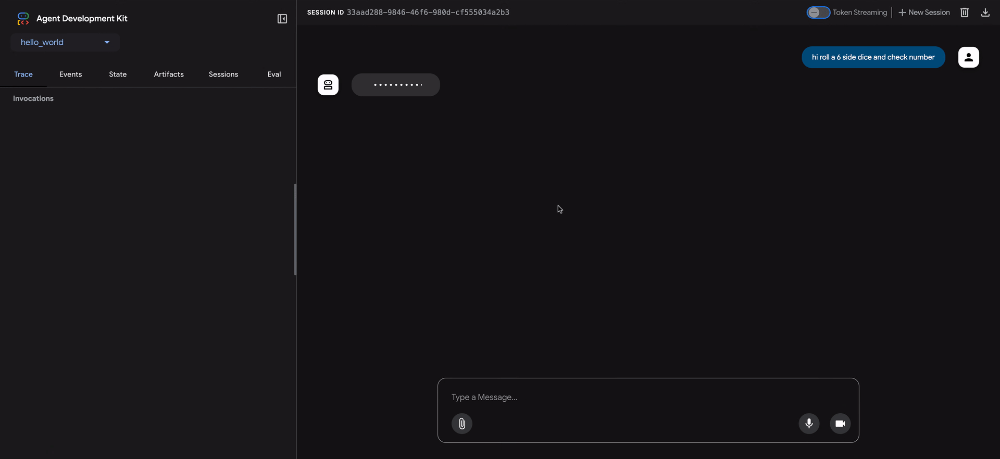

Why evaluate agents¶
In traditional software development, unit tests and integration tests provide confidence that code functions as expected and remains stable through changes. These tests provide a clear "pass/fail" signal, guiding further development. However, LLM agents introduce a level of variability that makes traditional testing approaches insufficient.
Due to the probabilistic nature of models, deterministic "pass/fail" assertions are often unsuitable for evaluating agent performance. Instead, we need qualitative evaluations of both the final output and the agent's trajectory - the sequence of steps taken to reach the solution. This involves assessing the quality of the agent's decisions, its reasoning process, and the final result.
This may seem like a lot of extra work to set up, but the investment of automating evaluations pays off quickly. If you intend to progress beyond prototype, this is a highly recommended best practice.

Prepare for agent evaluations¶
Before automating agent evaluations, define clear objectives and success criteria:
- Define Success: What constitutes a successful outcome for your agent?
- Identify Critical Tasks: What are the essential tasks your agent must accomplish?
- Choose Relevant Metrics: What metrics will you track to measure performance?
These considerations will guide the creation of evaluation scenarios and enable effective monitoring of agent behavior in real-world deployments.
What to evaluate?¶
To bridge the gap between a proof-of-concept and a production-ready AI agent, a robust and automated evaluation framework is essential. Unlike evaluating generative models, where the focus is primarily on the final output, agent evaluation requires a deeper understanding of the decision-making process. Agent evaluation can be broken down into two components:
- Evaluate Trajectory and Tool Use: Analyzing the steps an agent takes to reach a solution, including its choice of tools, strategies, and the efficiency of its approach.
- Evaluate the Final Response: Assessing the quality, relevance, and correctness of the agent's final output.
The trajectory is just a list of steps the agent took before it returned to the user. We can compare that against the list of steps we expect the agent to have taken.
Evaluate trajectory and tool use¶
Before responding to a user, an agent typically performs a series of actions, which we refer to as a 'trajectory.' It might compare the user input with session history to disambiguate a term, or lookup a policy document, search a knowledge base or invoke an API to save a ticket. We call this a ‘trajectory’ of actions. Evaluating an agent's performance requires comparing its actual trajectory to an expected, or ideal, one. This comparison can reveal errors and inefficiencies in the agent's process. The expected trajectory represents the ground truth -- the list of steps we anticipate the agent should take.
For example:
# Trajectory evaluation will compare
expected_steps = ["determine_intent", "use_tool", "review_results", "report_generation"]
actual_steps = ["determine_intent", "use_tool", "review_results", "report_generation"]
ADK provides both groundtruth based and rubric based tool use evaluation metrics. To select the appropriate metric for your agent's specific requirements and goals, please refer to our recommendations.
How evaluation works with ADK¶
ADK offers two methods for evaluating agent performance against predefined datasets and evaluation criteria. While conceptually similar, they differ in the amount of data they can process, which typically dictates the appropriate use case for each.
Evaluate with test files¶
This approach involves creating individual test files, each representing a single, simple agent-model interaction (a session). It's most effective during active agent development, serving as a form of unit testing. These tests are designed for rapid execution and should focus on simple session complexity. Each test file contains a single session, which may consist of multiple turns. A turn represents a single interaction between the user and the agent. Each turn includes
User Content: The user issued query.Expected Intermediate Tool Use Trajectory: The tool calls we expect the agent to make in order to respond correctly to the user query.Expected Intermediate Agent Responses: These are the natural language responses that the agent (or sub-agents) generates as it moves towards generating a final answer. These natural language responses are usually an artifact of an multi-agent system, where your root agent depends on sub-agents to achieve a goal. These intermediate responses, may or may not be of interest to the end user, but for a developer/owner of the system, are of critical importance, as they give you the confidence that the agent went through the right path to generate final response.Final Response: The expected final response from the agent.
You can give the file any name for example evaluation.test.json. The framework only checks for the .test.json suffix, and the preceding part of the filename is not constrained. The test files are backed by a formal Pydantic data model. The two key schema files are
Eval Set and
Eval Case.
Here is a test file with a few examples:
Note
Comments are included for explanatory purposes and should be removed for the JSON to be valid.
# Do note that some fields are removed for sake of making this doc readable.
{
"eval_set_id": "home_automation_agent_light_on_off_set",
"name": "",
"description": "This is an eval set that is used for unit testing `x` behavior of the Agent",
"eval_cases": [
{
"eval_id": "eval_case_id",
"conversation": [
{
"invocation_id": "b7982664-0ab6-47cc-ab13-326656afdf75", # Unique identifier for the invocation.
"user_content": { # Content provided by the user in this invocation. This is the query.
"parts": [
{
"text": "Turn off device_2 in the Bedroom."
}
],
"role": "user"
},
"final_response": { # Final response from the agent that acts as a reference of benchmark.
"parts": [
{
"text": "I have set the device_2 status to off."
}
],
"role": "model"
},
"intermediate_data": {
"tool_uses": [ # Tool use trajectory in chronological order.
{
"args": {
"location": "Bedroom",
"device_id": "device_2",
"status": "OFF"
},
"name": "set_device_info"
}
],
"intermediate_responses": [] # Any intermediate sub-agent responses.
}
}
],
"session_input": { # Initial session input.
"app_name": "home_automation_agent",
"user_id": "test_user",
"state": {}
}
}
]
}
Test files can be organized into folders. Optionally, a folder can also include a test_config.json file that specifies the evaluation criteria.
How to migrate test files not backed by the Pydantic schema?¶
Note
If your test files don't adhere to EvalSet schema file, then this section is relevant to you.
Please use AgentEvaluator.migrate_eval_data_to_new_schema to migrate your
existing *.test.json files to the Pydantic backed schema.
The utility takes your current test data file and an optional initial session file, and generates a single output json file with data serialized in the new format. Given that the new schema is more cohesive, both the old test data file and initial session file can be ignored (or removed.)
Evaluate with an Evalset File¶
The evalset approach utilizes a dedicated dataset called an "evalset" for evaluating agent-model interactions. Similar to a test file, the evalset contains example interactions. However, an evalset can contain multiple, potentially lengthy sessions, making it ideal for simulating complex, multi-turn conversations. Due to its ability to represent complex sessions, the evalset is well-suited for integration tests. These tests are typically run less frequently than unit tests due to their more extensive nature.
An evalset file contains multiple "evals," each representing a distinct session. Each eval consists of one or more "turns," which include the user query, expected tool use, expected intermediate agent responses, and a reference response. These fields have the same meaning as they do in the test file approach. Alternatively, an eval can define a conversation scenario which is used to dynamically simulate a user interaction with the agent. Each eval is identified by a unique name. Furthermore, each eval includes an associated initial session state.
Creating evalsets manually can be complex, therefore UI tools are provided to help capture relevant sessions and easily convert them into evals within your evalset. Learn more about using the web UI for evaluation below. Here is an example evalset containing two sessions. The eval set files are backed by a formal Pydantic data model. The two key schema files are Eval Set and Eval Case.
Note
Comments are included for explanatory purposes and should be removed for the JSON to be valid.
# Do note that some fields are removed for sake of making this doc readable.
{
"eval_set_id": "eval_set_example_with_multiple_sessions",
"name": "Eval set with multiple sessions",
"description": "This eval set is an example that shows that an eval set can have more than one session.",
"eval_cases": [
{
"eval_id": "session_01",
"conversation": [
{
"invocation_id": "e-0067f6c4-ac27-4f24-81d7-3ab994c28768",
"user_content": {
"parts": [
{
"text": "What can you do?"
}
],
"role": "user"
},
"final_response": {
"parts": [
{
"text": "I can roll dice of different sizes and check if numbers are prime."
}
],
"role": null
},
"intermediate_data": {
"tool_uses": [],
"intermediate_responses": []
}
}
],
"session_input": {
"app_name": "hello_world",
"user_id": "user",
"state": {}
}
},
{
"eval_id": "session_02",
"conversation": [
{
"invocation_id": "e-92d34c6d-0a1b-452a-ba90-33af2838647a",
"user_content": {
"parts": [
{
"text": "Roll a 19 sided dice"
}
],
"role": "user"
},
"final_response": {
"parts": [
{
"text": "I rolled a 17."
}
],
"role": null
},
"intermediate_data": {
"tool_uses": [],
"intermediate_responses": []
}
},
{
"invocation_id": "e-bf8549a1-2a61-4ecc-a4ee-4efbbf25a8ea",
"user_content": {
"parts": [
{
"text": "Roll a 10 sided dice twice and then check if 9 is a prime or not"
}
],
"role": "user"
},
"final_response": {
"parts": [
{
"text": "I got 4 and 7 from the dice roll, and 9 is not a prime number.\n"
}
],
"role": null
},
"intermediate_data": {
"tool_uses": [
{
"id": "adk-1a3f5a01-1782-4530-949f-07cf53fc6f05",
"args": {
"sides": 10
},
"name": "roll_die"
},
{
"id": "adk-52fc3269-caaf-41c3-833d-511e454c7058",
"args": {
"sides": 10
},
"name": "roll_die"
},
{
"id": "adk-5274768e-9ec5-4915-b6cf-f5d7f0387056",
"args": {
"nums": [
9
]
},
"name": "check_prime"
}
],
"intermediate_responses": [
[
"data_processing_agent",
[
{
"text": "I have rolled a 10 sided die twice. The first roll is 5 and the second roll is 3.\n"
}
]
]
]
}
}
],
"session_input": {
"app_name": "hello_world",
"user_id": "user",
"state": {}
}
}
]
}
How to migrate eval set files not backed by the Pydantic schema?¶
Note
If your eval set files don't adhere to EvalSet schema file, then this section is relevant to you.
Based on who is maintaining the eval set data, there are two routes:
-
Eval set data maintained by ADK UI If you use ADK UI to maintain your Eval set data then no action is needed from you.
-
Eval set data is developed and maintained manually and used in ADK eval CLI A migration tool is in the works, until then the ADK eval CLI command will continue to support data in the old format.
Evaluate with conformance testing¶
adk conformance test command verifies that your AI agents behave consistently over time. It ensures that updates to your codebase or models don't introduce regressions by validating current agent outputs against baseline data.
Prerequisites and setup¶
Before the adk conformance command can execute meaningful regression testing, you must establish an optimal "golden baseline." Conformance testing operates by comparing live agent behavior against these previously recorded, verified interactions.
Follow this workflow to prepare your environment:
Create the Test Directory Hierarchy¶
Conformance tests rely on a strict file layout to automatically discover and map test cases. Initialize your testing directory using the following structure:
tests
└── category_name/
└── test_case_name/
├── spec.yaml # Test case specification
├── generated-recordings.yaml # Baseline recorded interactions
└── generated-session.yaml # Baseline session data
Note
If your agent uses Server-Sent Events (SSE), the testing framework will additionally look for generated-recordings-sse.yaml and generated-session-sse.yaml within the same folder.
Define the test specification (spec.yaml)¶
In your target test folder, create a spec.yaml file. This file outlines the initial conditions, configurations, and user prompts that the agent will execute during the baseline recording and subsequent conformance runs. Ensure your file matches the following basic schema, this is an example only:
# Example spec.yaml for a Weather Agent.
# The test case name and category are inferred from the folder structure.
description: "Verifies the agent correctly identifies location and calls the weather tool."
agent: "weather_agent"
user_messages:
- text: "What's the temperature in San Francisco right now?"
Automate the baseline¶
Because the background data (like LLM requests and tool calls) is complex, you shouldn't try to write or save the baseline files manually. Instead, let ADK generate them for you.
- Start your ADK web server with the recording plugin turned on:
adk web -v --extra_plugins=google.adk.cli.plugins.recordings_plugin.RecordingsPlugin /path/to/agents
- Next, open a new terminal window and tell ADK to create the baseline files based on your spec.yaml:
The trailing streaming-mode argument is required. Use none to record generated-recordings.yaml and generated-session.yaml, or sse to record generated-recordings-sse.yaml and generated-session-sse.yaml instead. The bidi mode is not supported for recording.
This automatically runs the scenario, records all the interactions, and saves the generated-recordings.yaml and generated-session.yaml files exactly where they need to be.
Once these baseline files are locked in, your setup is complete, and the directory is ready to be targeted by adk conformance in either Replay or Live mode.
How it works¶
- Replay Mode (Default): The tool runs your agent and compares its live LLM requests, responses, and tool calls directly against your previously recorded interactions to catch unexpected deviations.
- Live Mode: Runs evaluation-based verification against active environments (Note: This mode is a work in progress).
Evaluation criteria¶
ADK provides several built-in criteria for evaluating agent performance, ranging from tool trajectory matching to LLM-based response quality assessment. For a detailed list of available criteria and guidance on when to use them, please see Evaluation Criteria.
Here is a summary of all the available criteria:
- tool_trajectory_avg_score: Exact match of tool call trajectory.
- response_match_score: ROUGE-1 similarity to reference response.
- final_response_match_v2: LLM-judged semantic match to a reference response.
- rubric_based_final_response_quality_v1: LLM-judged final response quality based on custom rubrics.
- rubric_based_tool_use_quality_v1: LLM-judged tool usage quality based on custom rubrics.
- rubric_based_multi_turn_trajectory_quality_v1: LLM-judged multi-turn trajectory quality based on custom rubrics.
- hallucinations_v1: LLM-judged groundedness of agent response against context.
- safety_v1: Safety/harmlessness of agent response.
- per_turn_user_simulator_quality_v1: LLM-judged user simulator quality.
- multi_turn_task_success_v1: Evaluates if agent achieves goal(s) of conversation.
- multi_turn_trajectory_quality_v1: Evaluates the overall trajectory of the conversation.
- multi_turn_tool_use_quality_v1: Evaluates function calls made during a conversation.
Note
Some criteria (such as response quality, safety, and multi-turn quality)
require the Vertex Gen AI Evaluation Service
API.
To use them, authenticate by setting a GOOGLE_API_KEY environment
variable, or by using Google Cloud project credentials
(GOOGLE_CLOUD_PROJECT and GOOGLE_CLOUD_LOCATION with Application Default
Credentials).
If no evaluation criteria are provided, the following default configuration is used:
tool_trajectory_avg_score: Defaults to 1.0, requiring a 100% match in the tool usage trajectory.response_match_score: Defaults to 0.8, allowing for a small margin of error in the agent's natural language responses.
Here is an example of a test_config.json file specifying custom evaluation criteria:
Recommendations on criteria¶
Choose criteria based on your evaluation goals:
- Enable tests in CI/CD pipelines or regression testing: Use
tool_trajectory_avg_scoreandresponse_match_score. These criteria are fast, predictable, and suitable for frequent automated checks. - Evaluate trusted reference responses: Use
final_response_match_v2to evaluate semantic equivalence. This LLM-based check is more flexible than exact matching and better captures whether the agent's response means the same thing as the reference response. - Evaluate response quality without a reference response: Use
rubric_based_final_response_quality_v1. This is useful when you don't have a trusted reference, but you can define attributes of a good response (e.g., "The response is concise," "The response has a helpful tone"). - Evaluate the correctness of tool usage: Use
rubric_based_tool_use_quality_v1. This allows you to validate the agent's reasoning process by checking, for example, that a specific tool was called or that tools were called in the correct order (e.g., "Tool A must be called before Tool B"). - Check if responses are grounded in context: Use
hallucinations_v1to detect if the agent makes claims that are unsupported by or contradictory to the information available to it (e.g., tool outputs). - Check for harmful content: Use
safety_v1to ensure that agent responses are safe and do not violate safety policies. - Evaluate multi-turn goal completion: Use
multi_turn_task_success_v1to measure the overall success of a multi-turn conversation in achieving its intended objectives. - Evaluate overall conversation trajectory: Use
multi_turn_trajectory_quality_v1to assess the efficiency, effectiveness, and logic of the steps taken during the conversation. - Evaluate tool usage in multi-turn workflows: Use
multi_turn_tool_use_quality_v1to assess the quality, relevance, and correctness of tool or function calls made across multiple turns.
In addition, criteria which require information on expected agent tool use
and/or responses are not supported in combination with
User Simulation.
The affected criteria include tool_trajectory_avg_score, response_match_score
and final_response_match_v2. Support for user simulation is listed per
criterion in the support column of Evaluation Criteria.
User simulation¶
When evaluating conversational agents, it is not always practical to use a fixed set of user prompts, as the conversation can proceed in unexpected ways. For example, if the agent needs the user to supply two values to perform a task, it may ask for those values one at a time or both at once. To resolve this issue, ADK allows you test the behavior of the agent in a specific conversation scenario with user prompts that are dynamically generated by an AI model. For details on how to set up an eval with user simulation, see User Simulation.
How to run evaluation with ADK¶
As a developer, you can evaluate your agents using the ADK in the following ways:
- Web-based UI (
adk web): Evaluate agents interactively through a web-based interface. - Programmatically (
pytest): Integrate evaluation into your testing pipeline usingpytestand test files. - Command Line Interface (
adk eval): Run evaluations on an existing evaluation set file directly from the command line. - Conformance Testing (
adk conformance):** Execute automated tests against your baseline files to detect unexpected deviations or regressions.
Run evaluations via the web UI¶
The web UI provides an interactive way to evaluate agents, generate evaluation datasets, and inspect agent behavior in detail.
Step 1: Create and save a test case¶
- Start the web server by running:
adk web <path_to_your_agents_folder> - In the web interface, select an agent and interact with it to create a session.
- Navigate to the Eval tab on the right side of the interface.
- Create a new eval set or select an existing one.
- Click "Add current session" to save the conversation as a new evaluation case.
Step 2: View and edit your test case¶
Once a case is saved, you can click its ID in the list to inspect it. To make changes, click the Edit current eval case icon (pencil). This interactive view allows you to:
- Modify agent text responses to refine test scenarios.
- Delete individual agent messages from the conversation.
- Delete the entire evaluation case if it's no longer needed.

Step 3: Run the evaluation with custom metrics¶
- Select one or more test cases from your evalset.
- Click Run Evaluation. An EVALUATION METRIC dialog will appear.
- In the dialog, use the sliders to configure the thresholds for:
- Tool trajectory avg score
- Response match score
- Click Start to run the evaluation using your custom criteria. The evaluation history will record the metrics used for each run.

Step 4: Analyze results¶
After the run completes, you can analyze the results:
- Analyze Run Failures: Click on any Pass or Fail result. For failures, you can hover over the
Faillabel to see a side-by-side comparison of the Actual vs. Expected Output and the scores that caused the failure.
Debugging with the Trace View¶
ADK web UI includes a powerful Trace tab for debugging agent behavior. This feature is available for any agent session, not just during evaluation.
The Trace tab provides a detailed and interactive way to inspect your agent's execution flow. Traces are automatically grouped by user message, making it easy to follow the chain of events.
Each trace row is interactive:
- Hovering over a trace row highlights the corresponding message in the chat window.
- Clicking on a trace row opens a detailed inspection panel with four tabs:
- Event: The raw event data.
- Request: The request sent to the model.
- Response: The response received from the model.
- Graph: A visual representation of the tool calls and agent logic flow.


Blue rows in the trace view indicate that an event was generated from that interaction. Clicking on these blue rows will open the bottom event detail panel, providing deeper insights into the agent's execution flow.
Run tests programmatically¶
You can also use pytest to run test files as part of your integration tests.
Example command¶
Example test code¶
Here is an example of a pytest test case that runs a single test file:
from google.adk.evaluation.agent_evaluator import AgentEvaluator
import pytest
@pytest.mark.asyncio
async def test_with_single_test_file():
"""Test the agent's basic ability via a session file."""
await AgentEvaluator.evaluate(
agent_module="home_automation_agent",
eval_dataset_file_path_or_dir="tests/integration/fixture/home_automation_agent/simple_test.test.json",
)
This approach allows you to integrate agent evaluations into your CI/CD pipelines or larger test suites. If you want to specify the initial session state for your tests, you can do that by storing the session details in a file and passing that to AgentEvaluator.evaluate method.
Run evaluations via the CLI¶
You can also run evaluation of an eval set file through the command line interface (CLI). This runs the same evaluation that runs on the UI, but it helps with automation, i.e. you can add this command as a part of your regular build generation and verification process.
Here is the command:
adk eval \
<AGENT_MODULE_FILE_PATH> \
<EVAL_SET_FILE_PATH_OR_ID>... \
[--config_file_path=<PATH_TO_TEST_JSON_CONFIG_FILE>] \
[--print_detailed_results]
For example:
adk eval \
samples_for_testing/hello_world \
samples_for_testing/hello_world/hello_world_eval_set_001.evalset.json
Here are the details for each command line argument:
AGENT_MODULE_FILE_PATH: The path to the agent directory, not a file, whose__init__.pyexposes a module by the name "agent". "agent" module contains aroot_agent.EVAL_SET_FILE_PATH_OR_ID: The path to evaluations file(s), or the id of an eval set managed by ADK and created withadk eval_set create. You can specify one or more of either, but you cannot mix file paths and eval set ids in the same command. For each eval set, all evals run by default. If you want to run only specific evals from a eval set, first create a comma separated list of eval names and then add that as a suffix to the eval set file name or id, demarcated by a colon:.- For example:
sample_eval_set_file.json:eval_1,eval_2,eval_3This will only run eval_1, eval_2 and eval_3 from sample_eval_set_file.json CONFIG_FILE_PATH: The path to the config file.PRINT_DETAILED_RESULTS: Prints detailed results on the console.
Run conformance tests¶
You can run all your tests at once, run specific ones, or create a summary report.
Run all tests¶
If you don't type a specific folder path, the tool automatically looks for a tests/ folder in your workspace and runs everything inside it:
Run specific test groups or individual cases¶
Pass one or more folder paths to narrow down which tests execute:
# Test an entire category of tests
adk conformance test tests/core
# Test one specific case
adk conformance test tests/core/description_001
Generate Markdown test reports¶
Add the --generate_report flag to produce a clean test summary report. You can optionally specify where to save it using the --report_dir parameter:
Automate with CI/CD¶
Because adk conformance test is a command-line tool that fails if things don't match, it is highly useful for CI/CD pipelines. You can set it up to run automatically whenever someone opens a pull request, blocking any code from merging if it changes the agent's expected behavior.